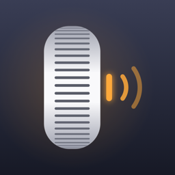

Politique de confidentialité
Octo Mix · en vigueur au 27 octobre 2026
Données traitées
L'application communique uniquement avec votre amplificateur, directement sur votre réseau local (Wi-Fi). Aucune donnée n'est envoyée sur Internet, ni à l'éditeur, ni à un tiers.
Sont enregistrés sur votre iPhone uniquement : l'adresse IP et le nom de l'amplificateur choisi, l'affichage préféré (simple ou avancé) et vos choix de sons et de vibrations. Supprimer l'application efface ces informations.
Réseau local
iOS vous demande l'autorisation d'accéder au réseau local. Elle sert exclusivement à trouver l'amplificateur et à régler son volume. Vous pouvez la retirer à tout moment dans Réglages › Octo Mix.
Ce que l'application ne fait pas
- Aucun compte, aucune inscription.
- Aucune publicité, aucun outil de mesure d'audience ni de suivi.
- Aucun accès à la localisation, aux contacts, aux photos ou au micro.
Contact
Responsable : Paul Olivier Lecourt — pololivierlecourt@gmail.com. Conformément au RGPD, vous pouvez nous écrire pour toute question ; aucune donnée vous concernant n'étant collectée, il n'y a rien à consulter ni à effacer de notre côté.